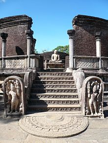

The period covers the kingdoms of Polonnaruwa 1017-1070, 1070-1232, Dambadeniya 1232 – 1272, Yapahuwa 1272-1293, Kurunegala 1293-1340, Gampola 1341- 1374 and Kotte (Sithavaka 1521-1593) 1372-1597. Kings of Chola dynasty that ruled from 1017 – 1070 A.D, issued a “Kahawanu” that was similar to a “Kahawanu” that was minted in the last half of the Anuradhapura era. It was made of copper. A unique characteristic of these coins was that each one bore the name of the king in power at the time of its production. This was the first coin produced in the country that bore the name of the ruler.

Source: Sri Lanka Tourism Promotion Bureau Massa Coin - 1
Massa Coin - 1
 Massa Coin - 2
Massa Coin - 2
 Massa Coin - 3
Massa Coin - 3
King Vijayabahu I who was responsible for toppling of the Chola dynasty, uniting the country and the inception of the Polonnaruwa Kingdom; also produced ‘Kahawanu’. He added his name to the face of the coin. Thus he is the first Sinhalese King to have had his name engraved on coins that were issued during his reign. This coin was known as ‘Massa’.
The practice of engraving the name of the King on coins continued from the beginning of the Polonnaruwa era until the end of the Dambadeni era. The coins that belonged to the period of the Polonnaruwa Kingdom bore the name of the King responsible for their production in ’Naagari Akshara’ or ‘Naagari characters’. Thus the name of King Vijayabahu appeared on the coin as Sri Vijayabahu, King Parakramabahu as Sri Parakramabahu, Chodaganga as Sri Chodagangadeva, Queen Leelawathi as Sri Raja Leelawathi, King Sahassamalla as Sri Sahasamalla, Dharmashoka as Sri Dharmashokadeva, and Bhuwanekabahu as Sri Bhuwanekabahu. But King Nishankamalla’s name appeared as Sri Kaligalakeja.
When names of kings Vijayabahu and Parakramabahu appear on coins, there is no specification as to which Vijayabahu or Parakramabahu it was. Only the name appears in same way in Naagari letters. In particular, Queen Leelawathi was in power in three different periods but there is no way of knowing which coins bearing her name came from which of the three periods.
Coins produced under Chola kings such as Rajaraja I (985-1016 A.D), Rajendra I (1012-1044 A.D) and Rajadhiraja I (1018-1054) as well as under Pandya Kings were used during the Polonnaruwa Era. In addition, the use of coins minted under the kings of the Chinese Sun dynasty as well as the use of Arabic coins during this era indicates that Sri Lanka engaged in international trade in the Polonnaruwa era just as it did in the Anuradhapura era.
 Lion Coin – Parakramabahu VI
Lion Coin – Parakramabahu VIThe golden ‘Kahawanu’ was a product of the last stages of the Anuradhapura era. The ‘Kahawanu’ entered the Polonnaruwa era in the form of a Copper coin. Nonetheless, coins that were used from the beginning of the Polonnaruwa era to the Dambadeni era are identified as the ‘coins of middle ages’ or Dambadeni. The ‘Dambadeni Massa’ coin is in fact the same as the Massa minted in the Polonnaruwa era. It is also known as the ‘Sinhala Massa’.
The images depicted on the faces of these coins are very similar to the ones found on coins from the Anuradhapura era. On one side of the coin there is a figure of a man clad in a ‘Dhothi’. The Copper Massa bears the same image. On the flipside, there is a figure seated. Additionally, there are other markings and symbols on both sides of the coin.
A special feature can be observed on coins bearing the name of King Parakramabahu VI (1412 – 1467 AD). To specify, there is an image of a lion to the right of the human figure that appears on the face of the coin. These coins are known as ‘Lion coins’. This particular type of coin is the last of the ones bearing the names of the rulers.
The Cetu was issued in the 13th century under the rule of king Aryachakravarthi who ruled in Jaffna. This coin is a close imitation of the Dambadeni Massa. There is an image of a cow on one side and a standing figure (similar to that on the Dambadeni Massa) on the other. This coin is made of Copper. Majority of these coins were discovered in areas such as Nalloor, Thinnaveli, Kopai, Sandilippai, Sunthoor, Nagarkovil and Maamkulam.
Preview
Next
05. Post-Independence Period since Establishment of the Central Bank of Ceylon